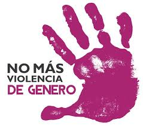

La tecnologia puede ser una gran aliada en la lucha contra la violencia de genero. En los ultimos años se han desarrollado diversas aplicaciones y herramientas digitales que permiten a las personas en situacion de riesgo pedir ayuda de forma rapida, segura y discreta. Algunas de las mas conocidas son "BOTON DE PANICO", "NO ESTAS SOLA" Y "VIOLENTOMETRO", que ofrecen desdde lineas directas con fuerzas de seguridad hasta evaluaciones del riesgo y orientacion psicologica. Estas soluciones buscan empoderar a las victimas y facilitar su acceso a recursos de proteccion y contencion
.png)
-
PUNTOS CLAVES PARA LA AYUDA
- Apps de denuncia y alerta: Botones de panico vituales que envian la ubicacion en tiempo real a la policia o contacctos de emergencia
- Lineas de ayuda en lineas: Chats y videollamadas anonimas pra peddir ayuda inmediata sin necesidad de hablar por telefono Linea 114 con canales digitales
- Geolocalizacion y seguimiento: Sistemas para monitorear a victimas bajo proteccion judicial Pulseras electronicas que alertan si un agresor viola una orden de restrccion
- Plataformas educativas y de sensibilizacion: Cursos virtuales, campañas en redes sociales y materiales interactivos que enseñan sobre la igualdad de genero y prevencion
- Inteligencia artificial y Big data: Algoritmos que detectan patrones de violencia en redes sociales o mensajes Mapas de calor que identifican zonas con mayor incidencia de violencia de genreo para mejorar politicas publicas.
- Asistentes virtuales: Responden consultas sobre la violencia de genero de forma anonima Orientan a la victima sobre pasos a seguir y recursos disponibles
No todas las victimas tienen acceso a celulares o internet pero la teccnologia no solo protege, sino que tambien educa y previene, convirtiendose asi en un recurso clave dentro de la lucha contra la violencia de genero. Se convirtio en una herramienta fundamental para las victimas y brinda apoyo, seguridad y acompañamiento a las victimas
-
¿ COMO PREVENIR LA VIOLENCIA DE GENERO Y QUE HACER ANTE UN HECHO DE VIOLENCIA DE GENERO?
- *Pedir ayudda a familiares o personas cercanas
- *Denunciar a tu agresor
- *Educar a los jovenes con charlas y actividades referidas al tema
- *Promover desde de la infancia la igualdad de genero
- *Difundir campañas digitales